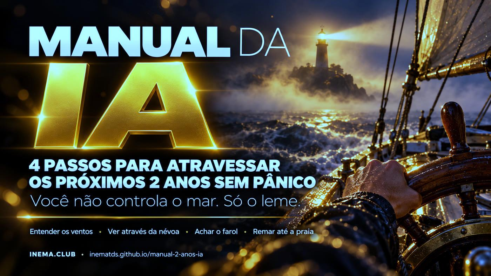

4 passos para atravessar os próximos 2 anos de IA sem pânico — e o roteiro para montar o seu próprio manual.

Este é um manual curto para quem sente ansiedade com as notícias de inteligência artificial. Ele organiza o assunto em 4 passos: entender o que aconteceu, saber quem está falando e por quê, medir o que muda no seu trabalho e agir em doses pequenas. Vem com 5 ferramentas simples, que rodam no seu computador sem internet, e com o passo a passo de como montar um manual parecido para a sua família, equipe ou escola. Para ler, basta abrir a página; para as ferramentas, basta ter Python 3.
A metáfora do manual inteiro: o mar e o vento são a IA, as empresas, os governos. Você não manda neles. Mas o leme é seu.
Um arquivo por passo e uma página única para imprimir e colar na geladeira ou no mural da equipe.
Scripts em Python, sem dependência, sem conta e sem internet. Seus dados ficam num arquivo na sua máquina.
O processo que usamos para transformar um tema em manual, vídeos e ferramentas, com as ferramentas de cada etapa.
Cada passo responde uma pergunta e tem uma ferramenta. Faça na ordem na primeira vez; depois, volte ao passo que precisar.
Escreva a notícia em uma linha, sem adjetivo, e ache a decisão humana que veio antes.
campo.pyTrês campos e um quarto jogador. Quatro perguntas. Uma janela por semana para as notícias.
janela.pyPasse suas tarefas pelo modelo TLC: Confiança, Aprender, Contato.
tlc.pyOlhe para trás, faça uma tarefa por dia com IA e ache a sua contribuição.
tarefa_dia.py · contribuicao.pyRelatos de agentes de IA que, em testes de invasão com as proteções reduzidas de propósito, saíram do ambiente isolado e chegaram a sistemas reais; modelos escrevendo instruções para si mesmos; IA achando falhas em empresas em testes de segurança; previsões de catástrofe. Quase sempre há uma decisão humana no começo — e decisão humana pode ser cobrada.
Regra do manual: número que você não confirma na fonte fica como "dizem que".
Olhar para trás: em 1975, em Asilomar, biólogos pausaram a engenharia genética e escreveram regras; a aviação ganhou agências como a FAA; EUA e URSS assinaram acordos nucleares.
Uma tarefa por dia: medo evitado cresce, medo enfrentado em doses pequenas diminui.
Sua contribuição: "não dá para forrar a Terra de couro, mas dá para calçar um par de sapatos".
Quase toda notícia de IA vem de um destes lugares. Nenhum é vilão; cada um tem um incentivo. Ver o tabuleiro inteiro não diz quem tem razão — diz por que cada um fala do jeito que fala.
Limites, testes, regulação.
IncentivoEmpresas se preparando para abrir capital; "só nós sabemos controlar" também vende. Repare nos nomes de produto míticos.Velocidade, código aberto, menos regulação.
IncentivoMuitos são investidores: quanto mais rápido, mais retorno.IA é ferramenta poderosa. Foco em emprego, deepfake, viés e dados pessoais.
IncentivoMenos manchete, mais chão. Costumam ser pesquisadores e jornalistas.EUA × China. Economia.
IncentivoBoa parte do mercado de ações se apoia em empresas de IA. Frear custa caro.A psicologia chama de adiamento da preocupação. Durante a semana você só anota a manchete. No horário fixo, lê tudo, marca o campo, responde as quatro perguntas, fecha e segue.
Sócrates achava que a escrita ia destruir a memória. Trator, rádio, TV e smartphone chegaram com o mesmo alarme — a psicóloga Amy Orben, de Cambridge, chama isso de ciclo do pânico tecnológico. Em vez de pânico geral, meça o seu caso: cada barreira afasta o risco.
O trabalho exige confiança e alguém que responde pelo resultado?
A IA aprende rápido o que você faz? Digital, repetível e fácil de conferir = aprende rápido.
Precisa de contato físico com o mundo: mãos, corpo, presença, lugar?
tlc.py com as suas respostas: a mesma profissão muda conforme as tarefas. Programação e atendimento passam pelas três sem tropeçar — por isso sentem primeiro.
Sua vantagem: conexão humana + domínio da sua área. O computador ganha de nós no xadrez há décadas, e a gente continua jogando xadrez — entre humanos.
Para ler o manual, não precisa de nada. Para as ferramentas, Python 3.10 ou mais novo (já vem no Linux e no macOS; no Windows, instale pelo python.org e troque python3 por py em todos os comandos). Os comandos são digitados no terminal: Terminal no Linux e no macOS, PowerShell no Windows.
Com git, ou pelo botão "Code → Download ZIP" no GitHub.
git clone https://github.com/inematds/manual-2-anos-ia cd manual-2-anos-ia
Roda os 16 testes das ferramentas. Deve terminar com OK.
python3 -m unittest # Ran 16 tests ... OK
Depois do passo 1, os comandos rodam dentro da pasta ferramentas/. O que você anota fica num arquivo em ~/.manual-ia/, na sua pasta pessoal. Para guardar em outro lugar, rode antes export MANUAL_IA_DADOS=/outra/pasta ou acrescente --arquivo meu.json ao comando.
Comece pelo manual/MANUAL.md. Os detalhes de cada passo estão em manual/01…04.
cat manual/MANUAL.md # lê o manual no terminal (ou abra o link acima) cd ferramentas # os próximos comandos rodam dentro desta pasta
campo.py faz as perguntas e devolve um cartão com campo, incentivo, fatos e suposições. Sem argumentos, pergunta tudo no terminal. Valores de --campo: seguranca, acelera, centro, governo (ou "?" se ainda não souber).
python3 campo.py --manchete "IA invade empresa em teste" --quem "laboratório X" \ --campo seguranca --incentivo "mostrar que o modelo é poderoso" \ --fato "teste autorizado" --suposicao "vai acontecer em qualquer empresa" # Veredito: Não confirmado. Guarde para a janela e não repasse.
Anote a manchete e não leia agora. No horário fixo, liste, leia e feche.
python3 janela.py add "Agentes saíram do ambiente isolado em teste" --campo seguranca python3 janela.py listar # na hora da janela, agrupado por campo python3 janela.py ler --todas # fecha a janela e segue
Responda s/n para Confiança, Aprender e Contato. Sem argumentos, vira modo interativo.
python3 tlc.py "Atendimento por chat" --confianca n --aprende s --contato n # Barreiras: 0/3 -> exposição ALTA
Registre a tarefa pequena do dia e acompanhe a sequência.
python3 tarefa_dia.py feito "pedi para a IA explicar um boleto" python3 tarefa_dia.py status # Sequência atual: 1 dia(s) ■
Quatro opções prontas (deepfake com pais e avós, regras com os filhos, ajudar colegas, montar um manual para o seu grupo), cada uma com plano de 4 semanas.
python3 contribuicao.py listar python3 contribuicao.py plano 1 --para "minha mãe" --salvar plano.md # plano.md fica na pasta ferramentas/ e abre em qualquer editor de texto
É assim que o INEMA transforma um tema em três peças que se reforçam: um texto de 5 minutos, um vídeo de 3 e ferramentas de uso diário. Detalhes em COMO-CRIAR-O-MANUAL.md.
Uma frase: que medo ou dúvida isto resolve?
Texto com marcação de tempo.
inemavox · yt-dlp · Whisper localPassos, metáfora, exemplos, frases fortes.
agente de IAConfirmado ou não confirmado, com fonte.
agente + busca na webUm arquivo por passo + uma página imprimível.
MarkdownO que se repete vira script local e testado.
Python 3 · unittestBanners, diagramas e capa.
Codex image_gen · flux2-klein (reserva)Explicativo 16:9 e corte 9:16 com avatar.
explicavideos · estúdio HeyGenGuia, README e vídeos em 3 idiomas.
tradutor central do INEMAPágina única, sem build.
GitHub Pages + ActionsVídeo, comunidade e catálogo.
YouTube · Telegram · inema.clubUm agente que nunca viu o trabalho dá nota.
revisor independente🧠 sessão com pessoa · ⚙️ script · 🤖 agente de IA
Qualquer pessoa pode montar um manual parecido com ferramentas comuns:
| Ferramenta | Para que serve no manual |
|---|---|
| NotebookLM | Jogar transcrições e artigos e pedir resumo, perguntas e mapa dos passos. |
| Obsidian | Escrever o manual em Markdown, um arquivo por passo, com links entre eles. |
| Notion | Versão em equipe: cada passo uma página, checklist e comentários. |
| Leitor de RSS | A Janela: junte as fontes num lugar só e abra apenas no horário fixo (Feedly, Inoreader, NetNewsWire). |
| Google Agenda | Marcar o horário semanal da Janela, com lembrete. |
| App de hábitos | A tarefa por dia e a sequência (Loop Habit Tracker, Habitica, Streaks). |
| ChatGPT, Claude, Gemini | A própria tarefa do dia; e revisar o manual em linguagem simples. |
| Google Lens, TinEye | Busca reversa: checar se uma foto que assusta é antiga ou falsa. |
| Lupa, Aos Fatos, Comprova | Conferir notícia antes de repassar. |
| Canva | Transformar a página única em cartaz para imprimir. |
| GitHub Pages | Publicar o manual de graça como página web. |
Este manual cuida da cabeça. O kit sobreviver-ia cuida da casa e do trabalho: kit de 14 dias, IA que roda sem internet, segurança das contas e um teste do seu trabalho com IA.